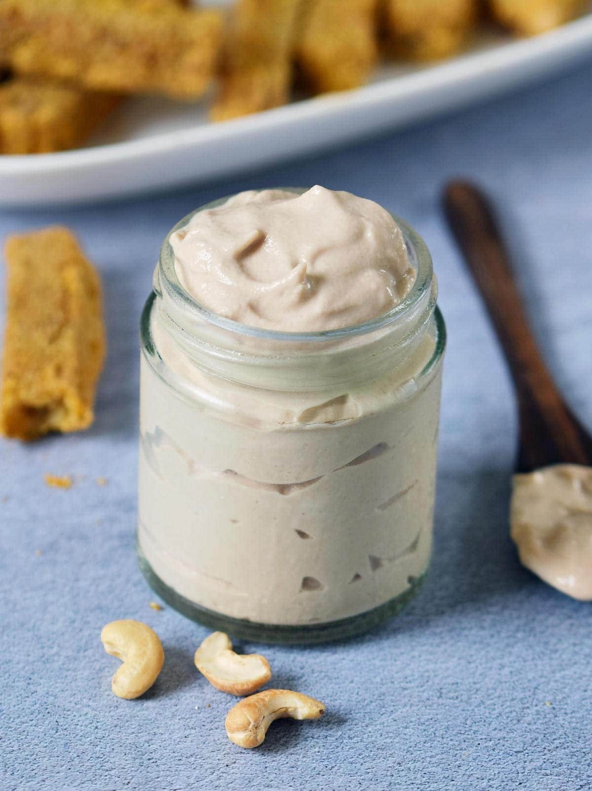

Vegan Mayo!

Description
Do you want to taste the same Mayo that you always loved when you were'nt vegan? You've come to the right place, because this recipe will show you how to make the same Mayo, but without hurting any animal!
Ingredients
- 1 cup canola oil
- 0.5 cup Soy Milk with not sugar (Alpro is probably the best one)
- 1 tsp lemon juice
- 1 tbsp mustard
- 1 tsp salt
- (Optional - but highly recommended) 3/4 drops of Indian black salt
Steps
- Get a mixer (ninja or the like)
- Put all the ingredients in the same order they appear above
- Mix until it becomes tough and not juicy anymore
- (Warning) If you added more lemon juice than instructed, it might come out more juicy than you'd like. If that happens what helped me the most was to add more mustard which seems to get it back to the toughness it needs.
Back